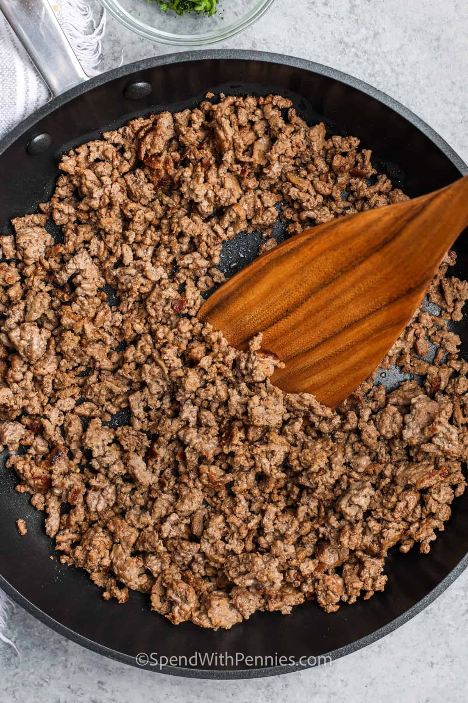

Ground Beef

Description
How to cook and season ground beef to be used in other dishes, or eaten on its own.
Ingredients
- Ground Beef
- Salt
- Pepper
- Onion Powder
- Garlic Powder
Steps
- Warm a pan over medium heat
- Put beef in pan and break it up with a spatula
- Season with salt, pepper, garlic powder, and onion powder
- Once beef is brown, drain grease and serve